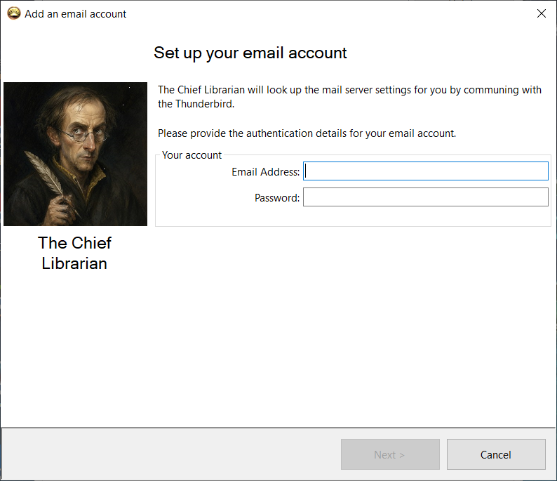
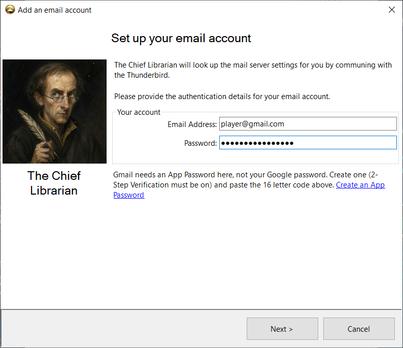
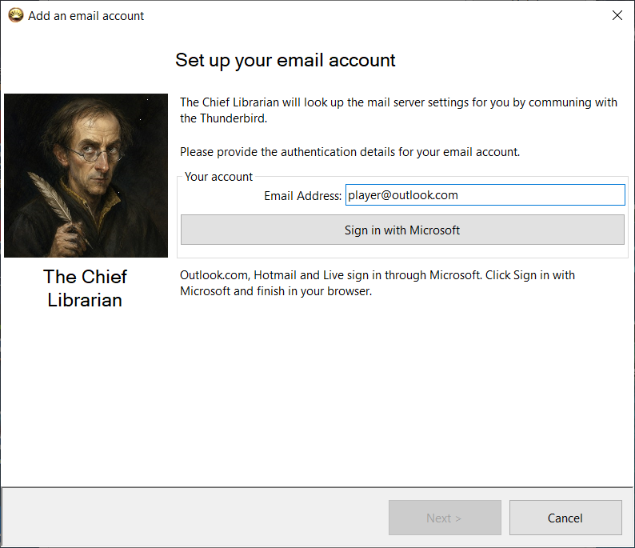
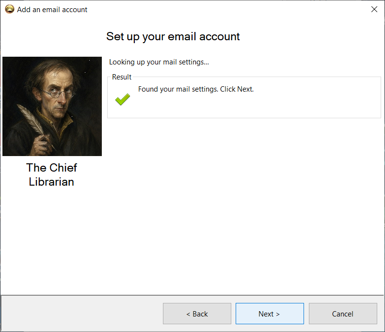
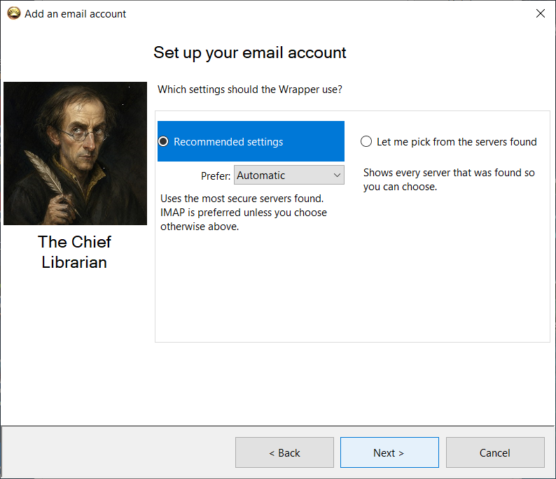
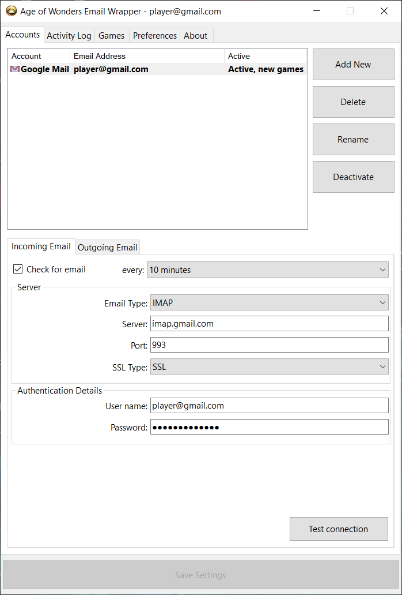
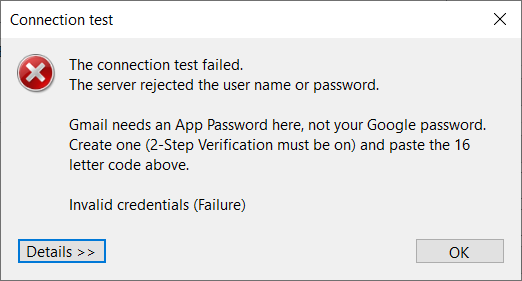
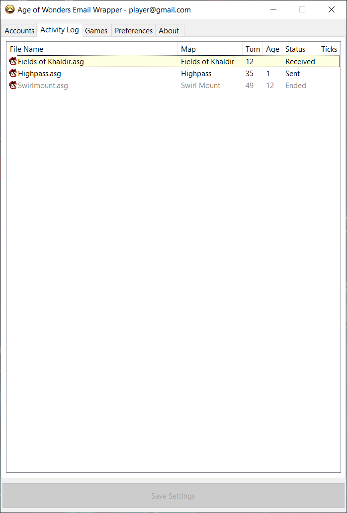

Quick Start Guide
The Wrapper sits in your system tray, sends your Age of Wonders play-by-email turns through your own email account and downloads the turns your opponents send back. This guide gets you from installation to your first turn in about ten minutes.
1. Install
- Run
AowEmailWrapper-2.0.0-setup.exe. No administrator password is needed. - If your PC does not have the .NET 8 Desktop Runtime, the setup downloads it from Microsoft (about 55 MB) and installs it first.
- Finish the setup with Launch ticked. The Wrapper starts and puts its icon in the notification area by the clock. If you do not see it, click the small arrow there to show hidden icons.
2. Add your email account
On first start the main window opens on the Accounts tab. Click Add New.



The Chief Librarian then looks up the mail server settings for your address by communing with the Thunderbird, which is to say the settings database Mozilla maintains for its own email program.


3. Check that it works
Back on the Accounts tab, click Test connection at the bottom of the Incoming Email tab, then do the same on the Outgoing Email tab. Each test signs in to the server with the settings shown and tells you the result.


Click Save Settings if it lights up.
4. Play
- Start the game, go to Scenario > Email (or Play by email) and create or load a play-by-email game as usual. The Wrapper has already configured the game to hand its turns to the Wrapper.
- End your turn and let the game send the email. The progress bar jumps straight to 100%: the game has handed the turn to the Wrapper, which sends it through your email account in the background. You hear a chime and see a balloon when it has gone.
- When an opponent's turn arrives the tray icon becomes an envelope and you hear a sound. With IMAP the mail server announces new mail at once, so this usually happens within seconds. To force a check, right-click the tray icon and choose Poll now.
- Double-click the tray icon, or the game's line on the Activity Log tab, to start the game. Load the turn with Scenario > Email > Load Game.

If nothing arrives
- The Wrapper only looks at unread mail in the Inbox, and only mail from the last year. Mark a turn as unread and choose Poll now to fetch it again.
- A balloon saying the sign-in was rejected means the password (or App Password) is wrong. Fix it on the Accounts tab and use Test connection; checking resumes when you save.
- Play a test game against yourself first: a two player game where both players have your own address. See the manual.